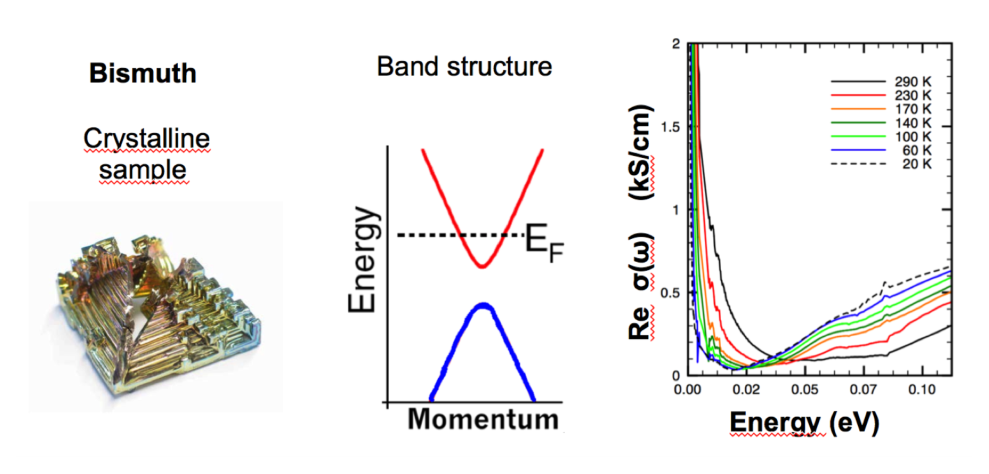

Solid state physics (Dirk van der Marel, University of Geneva)
I, Background: The color of a substance is caused by selective, i.e. frequency dependent, dissipation and dispersion of electromagnetic radiation. A vector potential oscillating at a frequency induces a current density at the same frequency. This is described by the linear relation , where is a complex frequency dependent function called “optical conductivity” which characterizes the optical properties of the substance. Throughout this problem set you may assume for simplicity that the electrons move in a one-dimensional space. The quantum theory of matter coupled to radiation provides the following expression for the real (dissipative) part of the optical conductivity \operatorname{Re}\sigma(\omega) = \operatorname{Re}\sigma(-\omega) = \frac{e^2}{V\hbar}\operatorname{Im}\int_0^\infty e^{i\omega t}\,\langle [\hat{x}(t), \hat{v}] \rangle\, dt \tag{1} where is the electron charge, the sample volume, and is an ensemble average over the Hamiltonian eigenstates of the substance. The position () and velocity () operators satisfy the equation of motion \hat{v}(t) = \frac{i}{\hbar}\big[\hat{H}, \hat{x}(t)\big] \tag{2} At time the Heisenberg representation yields and .
Question I: Show that the optical conductivity satisfies the following sum-rule \int_0^\infty \operatorname{Re}\sigma(\omega)\,d\omega = \frac{\pi e^2}{2V\hbar^2}\operatorname{Re}\big\langle \big[\hat{x}, [\hat{H}, \hat{x}]\big] \big\rangle \tag{3}
II, Background: The momentum operator and the position operator satisfy the Heisenberg uncertainty relation [\hat{x}, \hat{p}] = i\hbar \tag{4} Eq. (4) remains valid in a crystalline environment, but the set of eigenvalues of \hat{p}\,|q\rangle = q\,|q\rangle \tag{5} is confined to a finite interval, where is the lattice constant. In a metal in its simplest incarnation, one of the bands (the “conduction band”) is partially occupied with electrons and all other bands are either fully occupied or completely empty. The corresponding band-energies are the eigenvalues of the Hamiltonian operator \hat{H} = \varepsilon_c(\hat{p}) \tag{6} which in a solid environment is usually some complicated non-linear function of the momentum operator . In vacuum this reduces to the familiar expression , but in a solid environment the -dependence is different and varies strongly from one material to another. The optical conductivity has two types of contributions: \sigma(\omega) = \sigma_c(\omega) + \sigma_b(\omega) \tag{7} The current carried by the electrons in the conduction band described by Eq. (6) gives rise to the contribution , which corresponds to a zero-frequency mode with a finite width due to scattering. The finite-frequency (“bound charge”) contribution defined as , comes from optical transitions between the (fully and partly) occupied and (fully and partly) empty bands.
Question II: Assume that the substance contains a single electron, and that it occupies momentum eigenstate in the conduction band. Leave all other bands out of consideration and show with the help of Eqs. (3), (4) and (6) that satisfies \int_0^\infty \operatorname{Re}\sigma_c(\omega)\,d\omega = \frac{\pi e^2}{2V}\,\frac{\partial^2\varepsilon_c(q)}{\partial q^2} \tag{8}
III, Background: The many-electron generalization of Eq. (8) is a somewhat lengthy exercise which we are not asking you to do. It has the following result \int_0^\infty \operatorname{Re}\sigma_c(\omega)\,d\omega = \frac{\pi e^2}{2V}\sum_k n_c(k)\,\frac{\partial^2\varepsilon_c(k)}{\partial k^2} \tag{9} where is the average number of conduction electrons with momentum . In the limit of very high temperature, tends toward a -independent constant: .
Question III: Show that \lim_{T\to\infty}\int_0^\infty \operatorname{Re}\sigma_c(\omega)\,d\omega = 0 \tag{10}
IV, Background: However, since electrons can be thermally excited from one band to another, the restriction to a single band is not justified at finite temperature. In fact the following sum-rule for the full conductivity () holds for any temperature \int_0^\infty \operatorname{Re}\sigma(\omega)\,d\omega = \frac{\pi N e^2}{2 m_e V} \tag{11} where is the free electron mass and is the total number of electrons summed over all (partly or fully) occupied bands. Bismuth-antimony alloys are very interesting materials that exhibit a topological insulating phase for certain compositions. Pure bismuth is a semimetal, for which the main characteristics of the electronic structure are displayed in Figure 1 (an additional band of heavy hole carriers is left out of consideration for simplicity). The conduction band of these materials is characterized by a large value of the inverse effective mass , in other words . Since only a small number of -states are occupied, all having , the spectral weight of the zero-energy mode satisfies \int_0^\infty \operatorname{Re}\sigma_c(\omega)\,d\omega = \frac{\pi N_c e^2}{2 m_c V} \tag{12} where is the number of electrons in the conduction band.
Question IV: Given that , would nature allow a situation where the conduction band (red in Figure 1) would be the only band that is (partly or fully) occupied, implying that the blue band would be absent from Figure 1? Explain why or why not.

Figure 2: Left: Single crystal of bismuth. Middle panel: Schematic of the two bands close to the Fermi energy which are the most relevant ones for the optical spectrum shown in the right hand panel: The conduction band (red) crosses the Fermi energy . A fully occupied band (blue) has its maximum about below . Right hand panel: Optical conductivity of bismuth. Note the presence of the zero-frequency mode, , below for (shifting to higher energy for higher temperatures). The rise in conductivity above corresponds to and is due to optical transitions between the two bands indicated in the middle panel.Fonte: Testo (PDF) — p.11 Topic: Modern-Quantum Physics, Electromagnetism Metodi: Calculus-Integration, Statistical Averaging, Symmetry Argument, Physical Modeling Competenze: Mathematical Modeling, Physical Reasoning Objects: Electron
Fisica dello stato solido *
**I, Sottocondo: ** Il colore di una sostanza è causato da selective, cioè di frequenza, di dissipazione e di dispersione delle radiazioni elettromagnetiche. Un potenziale vettoriale oscillante a frequenza induce una densità di corrente alla stessa frequenza. Questo è descritto dalla relazione lineare , dove è una funzione complessa a frequenza dipendente chiamata “conduttività ottica” che caratterizza le proprietà ottiche della sostanza. In tutto questo insieme di problemi si può supporre per semplicità che gli elettroni si muovono in uno spazio unidimensionale. La teoria quantistica della materia accoppiata alla radiazione fornisce la seguente espressione per la parte reale (dissipativa) della conduttività ottica \operatorname{Re}\sigma(\omega) = \operatorname{Re}\sigma(-\omega) = \frac{e^2}{V\hbar}\operatorname{Im}\int_0^\infty e^{i\omega t}\,\langle [\hat{x}(t), \hat{v}] \rangle\, dt \tag{1} dove è la carica di elettroni, il volume del campione e è una media complessiva sugli stati propri hamiltoniani della sostanza. Gli operatori di posizione () e velocità () soddisfano l’equazione di movimento \hat{v}(t) = \frac{i}{\hbar}\big[\hat{H}, \hat{x}(t)\big] \tag{2} Nel tempo la rappresentazione di Heisenberg produce e .
Questa I: Dimostra che la conduttività ottica soddisfa la seguente regola sommata \int_0^\infty \operatorname{Re}\sigma(\omega)\,d\omega = \frac{\pi e^2}{2V\hbar^2}\operatorname{Re}\big\langle \big[\hat{x}, [\hat{H}, \hat{x}]\big] \big\rangle \tag{3}
**II, Sottocfronto: ** L’operatore di impulso e l’operatore di posizione soddisfano la relazione di incertezza di Heisenberg [\hat{x}, \hat{p}] = i\hbar \tag{4} Eq. (4) rimane valida in un ambiente cristallino, ma l’insieme dei valori propri di \hat{p}\,|q\rangle = q\,|q\rangle \tag{5} è confinato ad un intervallo finito, , dove è la costante della rete. In un metallo nella sua più semplice incarnazione, una delle bande (la “banda di condotta”) è parzialmente occupata da elettroni e tutte le altre bande sono completamente occupate o completamente vuote. Le corrispondenti energie di banda sono i valori propri dell’operatore hamiltoniano \hat{H} = \varepsilon_c(\hat{p}) \tag{6} che in un ambiente solido è di solito una complessa funzione non lineare dell’operatore di impulso . In vuoto si riduce a , ma in un ambiente solido la dipendenza è diversa e varia fortemente da un materiale all’altro. La conducibilità ottica ha due tipi di contributi: \sigma(\omega) = \sigma_c(\omega) + \sigma_b(\omega) \tag{7} La corrente trasportata dagli elettroni nella banda di conduzione descritta da Eq. (6) dà luogo al contributo , che corrisponde a una modalità a frequenza zero con larghezza finita a causa della dispersione. Il contributo di frequenza finita (“carica vincolata”) definito come , deriva da transizioni ottiche tra le bande (interamente e parzialmente) occupate e (interamente e parzialmente) vuote.
**Questione II: ** Supponiamo che la sostanza contenga un singolo elettrone e che occupi un stato di impulso proprio nella banda di conduzione. Lascia tutte le altre band fuori considerazione e mostra con l’aiuto di Eqs. 3, 4 e 6 che soddisfa \int_0^\infty \operatorname{Re}\sigma_c(\omega)\,d\omega = \frac{\pi e^2}{2V}\,\frac{\partial^2\varepsilon_c(q)}{\partial q^2} \tag{8}
**III, Sottopiede: ** La generalizzazione multi-elettronica di Eq. (8) è un’attività piuttosto lunga che non vi chiediamo di fare. Ha il seguente risultato: \int_0^\infty \operatorname{Re}\sigma_c(\omega)\,d\omega = \frac{\pi e^2}{2V}\sum_k n_c(k)\,\frac{\partial^2\varepsilon_c(k)}{\partial k^2} \tag{9} in cui è il numero medio di elettroni di conduttività con impulso . Nel limite di temperatura molto elevata, tende verso una costante indipendente da : .
**Questione III: ** Mostra che \lim_{T\to\infty}\int_0^\infty \operatorname{Re}\sigma_c(\omega)\,d\omega = 0 \tag{10}
**IV, Sostenibile: ** Tuttavia, poiché gli elettroni possono essere eccitati termicamente da una banda all’altra, la limitazione a una singola banda non è giustificata a temperatura finita. Infatti la seguente regola somma per la piena conducibilità () si applica a qualsiasi temperatura \int_0^\infty \operatorname{Re}\sigma(\omega)\,d\omega = \frac{\pi N e^2}{2 m_e V} \tag{11} in cui è la massa degli elettroni liberi e è il numero totale di elettroni sommato su tutte le bande occupate (parzialmente o completamente). Le leghe di bismuto-antimonio sono materiali molto interessanti che presentano una fase isolante topologica per determinate composizioni. Il bismuto puro è un semimetalo, per il quale le principali caratteristiche della struttura elettronica sono illustrate nella figura 1 (un’ulteriore fascia di portatori di buchi pesanti è esclusa per semplicità). La banda di conduzione di questi materiali è caratterizzata da un grande valore della massa effettiva inversa , in altre parole . Poiché solo un piccolo numero di stati sono occupati, tutti , il peso spettrale della modalità di energia zero soddisfa \int_0^\infty \operatorname{Re}\sigma_c(\omega)\,d\omega = \frac{\pi N_c e^2}{2 m_c V} \tag{12} dove è il numero di elettroni nella banda di conduzione.
**Questa IV: ** Dato che , la natura consentirebbe una situazione in cui la banda di conduttività (rossa nella Figura 1) sarebbe l’unica banda occupata (parzialmente o completamente), implicando che la banda blu sarebbe assente dalla Figura 1? Spiegate il perché o il perché no.
Figura 2: Sinistra: cristallo unico di bismuto. Pannello medio: Schema delle due bande vicine all’energia Fermi che sono le più rilevanti per lo spettro ottico mostrato nel pannello destro: la banda di conduzione (rosso) attraversa l’energia Fermi . Una banda completamente occupata (blu) ha il suo massimo di circa inferiore a . Pannello a destra: conduttività ottica del bismuto. Si noti la presenza della modalità di frequenza zero, , sotto per (scensione ad energia superiore per temperature più elevate). L’aumento della conductività superiore a corrisponde a e è dovuto a transizioni ottiche tra le due bande indicate nel pannello centrale.*
Fonte: Testo (PDF) — p.11 Topic: Modern-Quantum Physics, Electromagnetism Metodi: Calculus-Integration, Statistical Averaging, Symmetry Argument, Physical Modeling Competenze: Mathematical Modeling, Physical Reasoning Objects: Electron